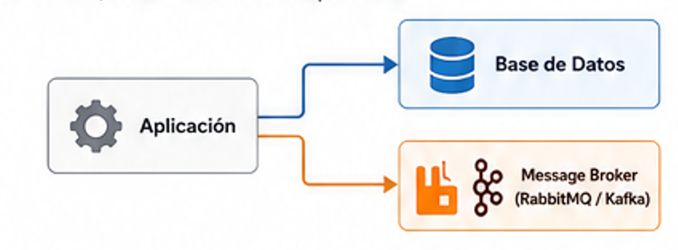
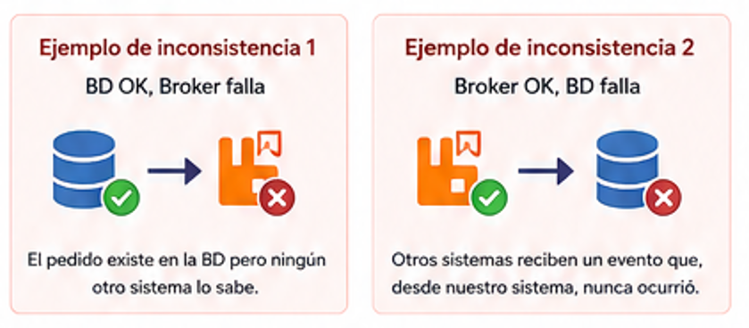
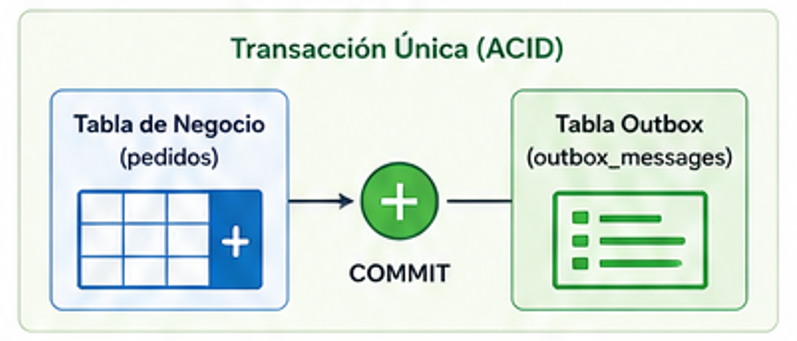
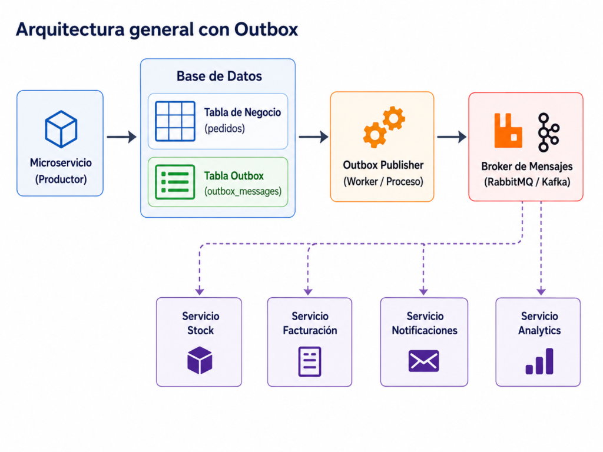
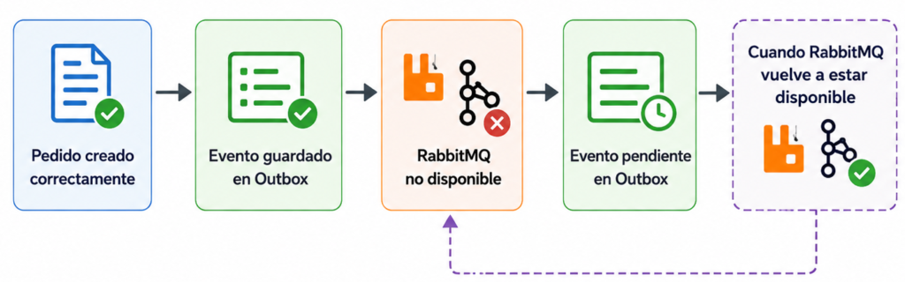
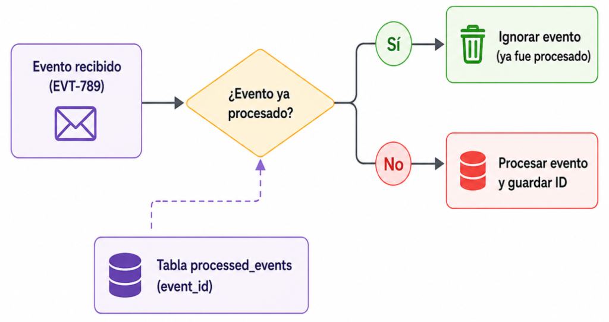
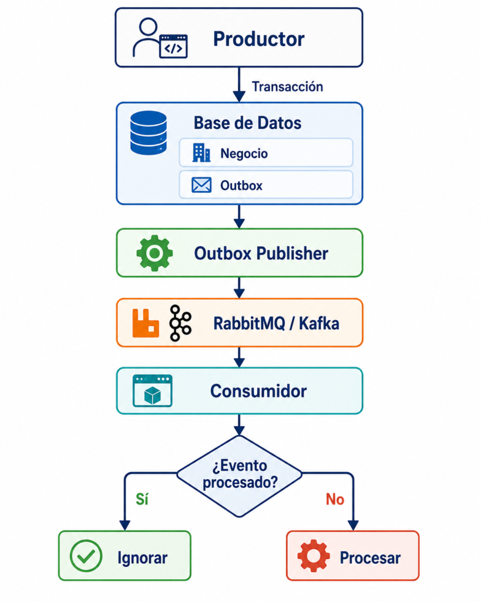
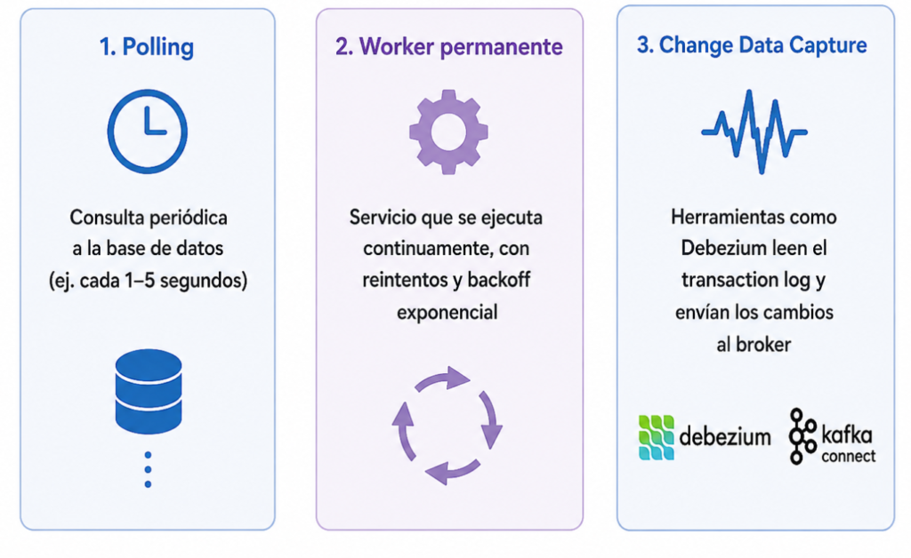
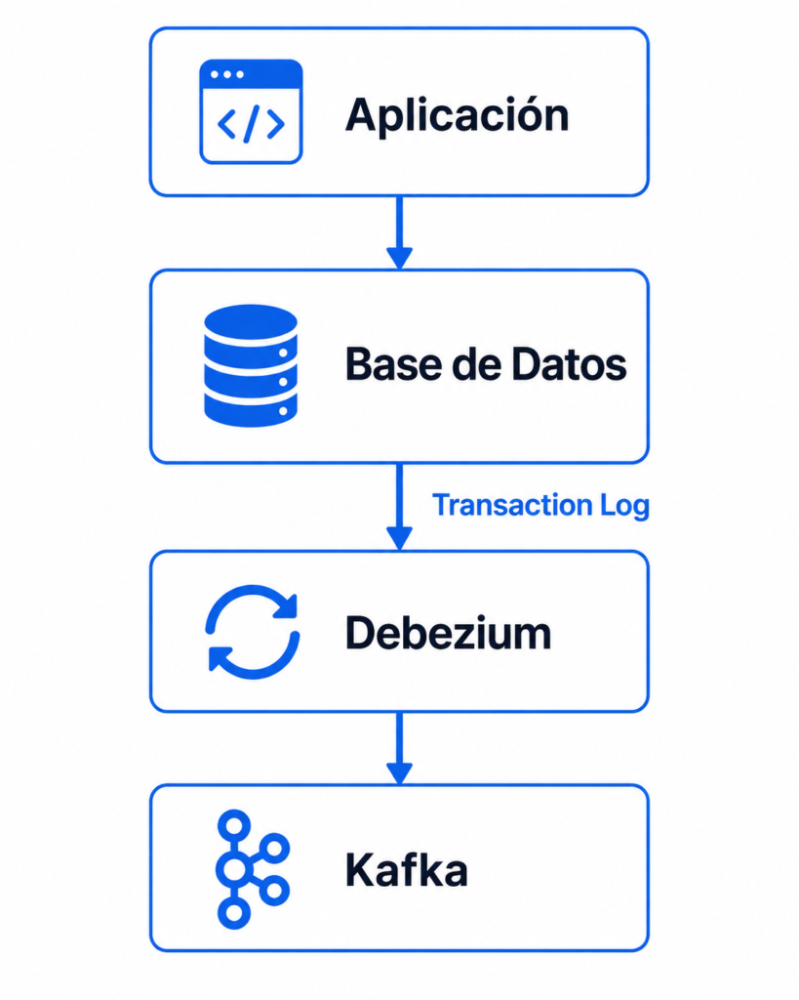
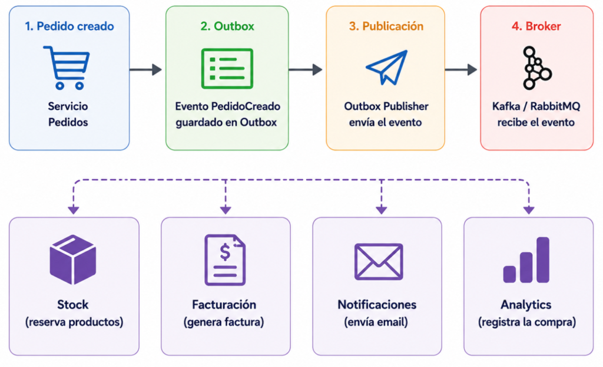

Cuando empezamos a trabajar con microservicios aparece un problema que, a primera vista, parece sencillo:
Guardar información en una base de datos y, al mismo tiempo, publicar un mensaje en RabbitMQ o Kafka.
Por ejemplo, imaginemos un microservicio de Pedidos. Cuando un usuario confirma una compra necesitamos:
- Guardar el pedido en la base de datos.
- Publicar un evento
PedidoCreado. - Permitir que otros servicios —Facturación, Stock, Notificaciones, etc.— reaccionen a ese evento.
El código podría parecer conceptualmente así:
BEGIN TRANSACTION
INSERT INTO pedidos (...)
COMMIT
PublicarEvento("PedidoCreado")El problema está justamente entre el COMMIT y la publicación del evento.
¿Qué pasa si la base de datos confirma correctamente la transacción, pero RabbitMQ o Kafka no están disponibles?
Terminamos con un pedido que existe en nuestra base de datos pero que ningún otro sistema sabe que existe.
Y eso es uno de los problemas clásicos de consistencia en arquitecturas distribuidas.
El problema de las dos transacciones
Cuando una operación involucra dos sistemas diferentes tenemos, en realidad, dos transacciones independientes:
La base de datos puede confirmar su transacción, pero eso no significa que el broker vaya a aceptar posteriormente el mensaje.

También podría ocurrir lo contrario:
1. Publicamos el mensaje
2. El broker confirma
3. Intentamos guardar en la base
4. La transacción de base de datos fallaAhora otros servicios reciben un evento indicando que ocurrió algo que, desde el punto de vista de nuestro sistema, nunca ocurrió.

¿Por qué no meter todo dentro de una única transacción?
Sería ideal poder hacer algo así:
BEGIN TRANSACTION
INSERT INTO pedidos (...)
PUBLISH PedidoCreado
COMMITEl problema es que el COMMIT de nuestra base de datos solamente controla recursos pertenecientes a esa base de datos.
RabbitMQ o Kafka son sistemas externos.
Para intentar garantizar atomicidad entre ambos podríamos utilizar mecanismos de transacciones distribuidas, generalmente asociados a protocolos como:
Two-Phase Commit (2PC)Pero esto introduce bastante complejidad.
Entre otras cosas:
- mayor acoplamiento entre componentes;
- peor disponibilidad;
- bloqueo de recursos;
- infraestructura adicional;
- mayor dificultad operativa;
- problemas de compatibilidad entre tecnologías;
- menor tolerancia a fallas.
En arquitecturas modernas de microservicios normalmente intentamos evitar este tipo de coordinación distribuida.
Y es justamente aquí donde aparece el Transactional Outbox Pattern.
¿Qué es el patrón Outbox?
La idea es sorprendentemente simple.
En lugar de intentar guardar información en la base de datos y publicar directamente el mensaje, guardamos ambas cosas en la misma base de datos y dentro de la misma transacción.

Para eso agregamos una tabla llamada, por ejemplo:
OutboxEl flujo pasa a ser:
BEGIN TRANSACTION
INSERT INTO pedidos (...)
INSERT INTO outbox (...)
COMMITLa tabla podría tener una estructura similar a esta:
CREATE TABLE outbox_messages (
id UUID PRIMARY KEY,
event_type VARCHAR(100) NOT NULL,
aggregate_id VARCHAR(100) NOT NULL,
payload JSONB NOT NULL,
created_at TIMESTAMP NOT NULL,
processed_at TIMESTAMP NULL
);Cuando creamos un pedido:
INSERT INTO pedidos (
id,
cliente_id,
total
)
VALUES (
'PED-123',
'CLI-456',
25000
);dentro de la misma transacción insertamos:
INSERT INTO outbox_messages (
id,
event_type,
aggregate_id,
payload,
created_at
)
VALUES (
'EVT-789',
'PedidoCreado',
'PED-123',
'{
"pedidoId": "PED-123",
"clienteId": "CLI-456",
"total": 25000
}',
NOW()
);Entonces ocurre algo importante:
Pedido + Eventose guardan dentro de una única transacción ACID.
Si la transacción falla:
Pedido ❌
Evento ❌Si la transacción funciona:
Pedido ✅
Evento ✅Desde el punto de vista de nuestra base de datos ya no puede existir uno sin el otro.
Pero todavía no publicamos nada
Exactamente.
El registro de la tabla Outbox todavía está solamente en nuestra base de datos.
Ahora necesitamos otro componente que se encargue de leer los eventos pendientes y publicarlos.
Podemos llamarlo:
Outbox Publishero:
Message RelayLa arquitectura queda así:

El publisher busca periódicamente mensajes pendientes:
SELECT *
FROM outbox_messages
WHERE processed_at IS NULL
ORDER BY created_at;Luego publica cada mensaje en el broker.
Por ejemplo:
Exchange / Topic:
pedidos.eventscon:
{
"eventId": "EVT-789",
"eventType": "PedidoCreado",
"pedidoId": "PED-123",
"clienteId": "CLI-456",
"total": 25000
}Una vez confirmado por RabbitMQ o Kafka, podemos marcarlo como procesado:
UPDATE outbox_messages
SET processed_at = NOW()
WHERE id = 'EVT-789';¿Qué ocurre si RabbitMQ está caído?
Acá aparece una de las principales ventajas del patrón.
Supongamos que tenemos:

No perdemos el evento.
Simplemente queda pendiente:
processed_at = NULLCuando RabbitMQ vuelva a estar disponible, el publisher podrá volver a intentarlo
Esto desacopla completamente la disponibilidad del broker de la transacción del negocio.
La creación del pedido no necesita que RabbitMQ esté disponible exactamente en ese instante.
Entonces conseguimos consistencia eventual
Es importante entender que Outbox no proporciona consistencia inmediata entre todos los microservicios.
Proporciona algo diferente:
Consistencia eventual
Durante algunos segundos podríamos tener:
Servicio Pedidos
Pedido PED-123 → existente
Servicio Facturación
Pedido PED-123 → todavía desconocidoDespués de que el evento sea publicado y procesado:
Servicio Pedidos
Pedido PED-123 → existente
Servicio Facturación
Pedido PED-123 → factura generadaLos sistemas terminan convergiendo hacia un estado consistente.
Este modelo encaja mucho mejor con arquitecturas distribuidas donde buscamos:
desacoplamiento + resiliencia + escalabilidaden lugar de intentar que todos los componentes participen en una única transacción global.
Hay un problema adicional: mensajes duplicados
Imaginemos esta situación:

Cuando el proceso vuelva a levantarse encontrará:
EVT-789
processed_at = NULLy volverá a publicarlo.
Resultado:
PedidoCreado
PedidoCreadodos veces.
Por eso un sistema basado en Outbox normalmente trabaja con una garantía similar a:
At Least Once DeliveryEs decir:
El evento se publicará al menos una vez, pero podría publicarse más de una vez.
Y esto introduce otro concepto fundamental.
Los consumidores deben ser idempotentes
Supongamos que Facturación recibe:
eventId = EVT-789La primera vez:
Genera facturaSi recibe nuevamente:
eventId = EVT-789no debería generar otra factura.
Una estrategia habitual consiste en guardar los eventos ya procesados:
processed_eventsPor ejemplo:
CREATE TABLE processed_events (
event_id UUID PRIMARY KEY,
processed_at TIMESTAMP NOT NULL
);Antes de procesar:
SELECT event_id
FROM processed_events
WHERE event_id = 'EVT-789';Si existe:
ignorar eventoSi no existe:
procesar evento
guardar event_idDe esta forma podemos hacer que:
Procesar 1 vez
Procesar 2 veces
Procesar 10 vecestermine produciendo el mismo resultado.
Esta propiedad se conoce como:
Idempotencia
Y es uno de los conceptos más importantes cuando trabajamos con sistemas orientados a eventos.
Outbox + Idempotencia
En la práctica ambos patrones suelen aparecer juntos.
El productor utiliza:
Transactional Outboxpara garantizar que el evento no se pierda.
El consumidor utiliza:
Idempotent Consumerpara garantizar que un evento duplicado no genere inconsistencias.
El flujo completo queda:

¿Cómo ejecutar el Outbox Publisher?
Hay varias estrategias.

1. Polling
La opción más sencilla.
Un proceso ejecuta periódicamente:
SELECT *
FROM outbox_messages
WHERE processed_at IS NULL
LIMIT 100;Por ejemplo:
cada 1 segundoo:
cada 5 segundosVentajas:
- simple;
- fácil de implementar;
- fácil de diagnosticar;
- prácticamente independiente de la tecnología.
Desventajas:
- agrega consultas periódicas;
- introduce cierta latencia;
- necesita controlar concurrencia.
Para muchos sistemas empresariales esta solución es más que suficiente.
2. Worker permanente
En lugar de un proceso periódico podemos tener un servicio dedicado:
Outbox Workerque se ejecuta permanentemente.
Por ejemplo:
.NET Worker Service
Java Spring Worker
Node.js Worker
PHP WorkerEl worker puede procesar registros constantemente y aplicar políticas de retry.
Por ejemplo:
retry 1 → 5 segundos
retry 2 → 30 segundos
retry 3 → 2 minutos
retry 4 → 10 minutosEsto suele implementarse mediante:
exponential backoff3. Change Data Capture
Una alternativa más sofisticada consiste en no consultar constantemente la tabla.
Podemos utilizar:
Change Data Capturepara detectar nuevos registros.
Herramientas como:
Debezium
Kafka Connectpueden leer directamente el transaction log de la base de datos.
La arquitectura podría ser:

La aplicación sigue escribiendo:
Negocio + Outboxen una única transacción, pero la publicación de eventos puede realizarse observando los cambios del log de la base de datos.
Esto evita gran parte del polling y puede funcionar muy bien en arquitecturas de gran volumen.
A cambio introduce más infraestructura y complejidad operativa.
Un Outbox real necesita algo más que un payload
En producción probablemente nuestra tabla termine teniendo más información.
Por ejemplo:
CREATE TABLE outbox_messages (
id UUID PRIMARY KEY,
aggregate_type VARCHAR(100),
aggregate_id VARCHAR(100),
event_type VARCHAR(100),
payload JSONB,
created_at TIMESTAMP,
processed_at TIMESTAMP,
retry_count INT DEFAULT 0,
last_error TEXT
);Esto nos permite observar cosas como:
Evento: PedidoCreado
Pedido: PED-123
Intentos: 4
Último error: RabbitMQ unavailable
Estado: PendingY ahí aparece algo que muchas veces se subestima:
El Outbox también se convierte en una herramienta de observabilidad.
Podemos saber exactamente qué eventos:
- fueron generados;
- fueron publicados;
- están pendientes;
- fallaron;
- fueron reintentados.
Esto facilita muchísimo investigar problemas en producción.
¿Y qué hacemos con los registros procesados?
Una tabla Outbox puede crecer rápidamente.
Supongamos:
100 eventos por segundoEso representa aproximadamente:
8.640.000 eventos diariosPor eso normalmente necesitamos una política de limpieza.
Por ejemplo:
DELETE FROM outbox_messages
WHERE processed_at < NOW() - INTERVAL '7 days';También podemos:
- archivar eventos;
- mover registros históricos;
- particionar la tabla;
- ejecutar jobs de housekeeping.
La estrategia dependerá de cuánto valor tenga conservar el historial.
Outbox no significa exactamente once
Es común escuchar:
“Con Outbox conseguimos exactamente una entrega.”
No necesariamente.
El patrón Outbox garantiza principalmente que:
Cambio de negocio
+
Creación del eventoocurran atómicamente.
Pero la comunicación con un broker sigue teniendo las características propias de los sistemas distribuidos.
Por eso el diseño más realista suele ser:
Transactional Outbox
+
At-Least-Once Delivery
+
Idempotent ConsumersEn muchos sistemas esta combinación es muchísimo más robusta que intentar construir una garantía global de exactly-once.
Ejemplo completo
Imaginemos un e-commerce.
Un usuario realiza una compra.

Paso 1 — Pedidos
El servicio de Pedidos ejecuta:
BEGIN TRANSACTION
crear Pedido PED-123
crear evento EVT-789
PedidoCreado
COMMITTenemos:
pedidos
──────────────
PED-123
outbox
──────────────────────
EVT-789 | PedidoCreadoPaso 2 — Publicación
El Outbox Publisher lee:
EVT-789y publica:
pedidos.creadoen Kafka o RabbitMQ.
Luego marca:
EVT-789 → processedPaso 3 — Consumidores
El evento llega a:
Stock
Facturación
Notificaciones
AnalyticsCada sistema reacciona de manera independiente:
Stock
→ reserva productos
Facturación
→ genera factura
Notificaciones
→ envía email
Analytics
→ registra la compraNinguno necesita que el servicio de Pedidos llame directamente a los demás.
¿Cuándo usar Transactional Outbox?
Es especialmente útil cuando tenemos:
- microservicios;
- arquitectura event-driven;
- RabbitMQ;
- Apache Kafka;
- Azure Service Bus;
- AWS SQS/SNS;
- procesos de integración;
- sincronización entre sistemas;
- operaciones que no pueden perder eventos.
Por ejemplo:
Pedido creado
Pago confirmado
Usuario registrado
Factura emitida
Stock actualizado
Alumno inscripto
Documento generado
Transferencia iniciadaSi perder uno de estos eventos puede dejar distintos sistemas en estados inconsistentes, Outbox es un patrón que vale la pena considerar.
¿Cuándo quizás no hace falta?
No toda aplicación necesita Outbox.
Si tenemos:
Frontend
↓
Backend monolítico
↓
Una única base de datosy todas las operaciones ocurren dentro de esa misma base de datos, probablemente una transacción tradicional sea suficiente.
Agregar:
Outbox
Workers
Broker
Retries
Idempotencia
Observabilidadsin una necesidad real simplemente aumenta la complejidad.
Como casi siempre en arquitectura:
un patrón resuelve un problema; no debería utilizarse solamente porque está de moda.